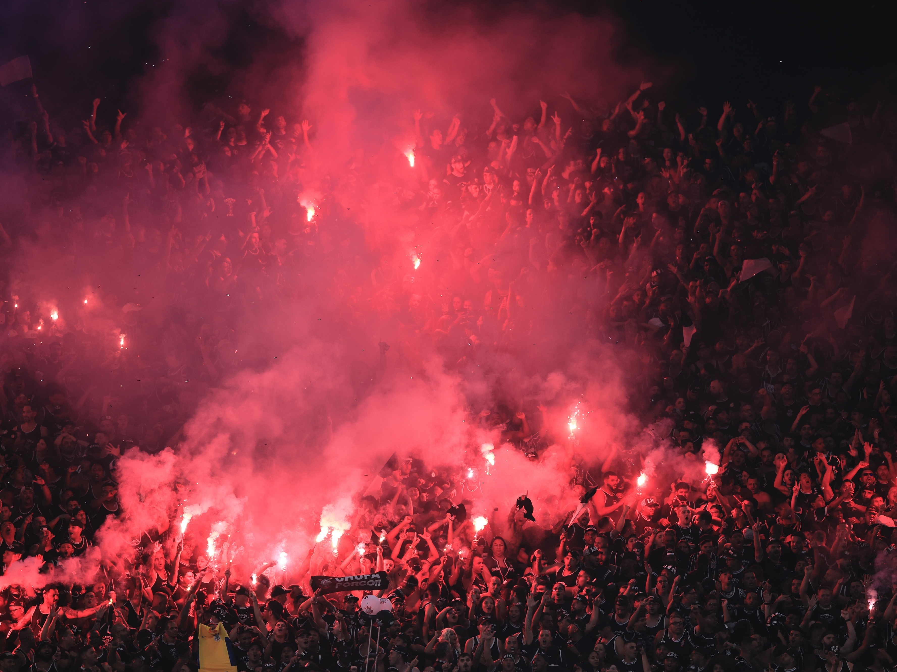

Início História Títulos Jogadores Torcida
A maior torcida organizada do Brasil

Final do Paulista 2025 contra o Palmeiras: a arquibancada virou um mar de sinalizadores.

A Gaviões da Fiel foi fundada em 1º de julho de 1969, em São Paulo, por um grupo de torcedores que queria fiscalizar e cobrar a diretoria do Corinthians. O clube estava há muitos anos sem ganhar títulos, e a torcida queria ter voz.
O nome vem do gavião, uma ave que vigia tudo lá de cima, e da palavra Fiel, como a torcida do Corinthians é chamada. O lema da torcida é "Lealdade, Humildade e Procedimento".
Com o tempo a Gaviões cresceu e virou a maior torcida organizada do Brasil, com milhares de sócios e subsedes espalhadas pelo país.
Sport Club Corinthians Paulista - desde 1910